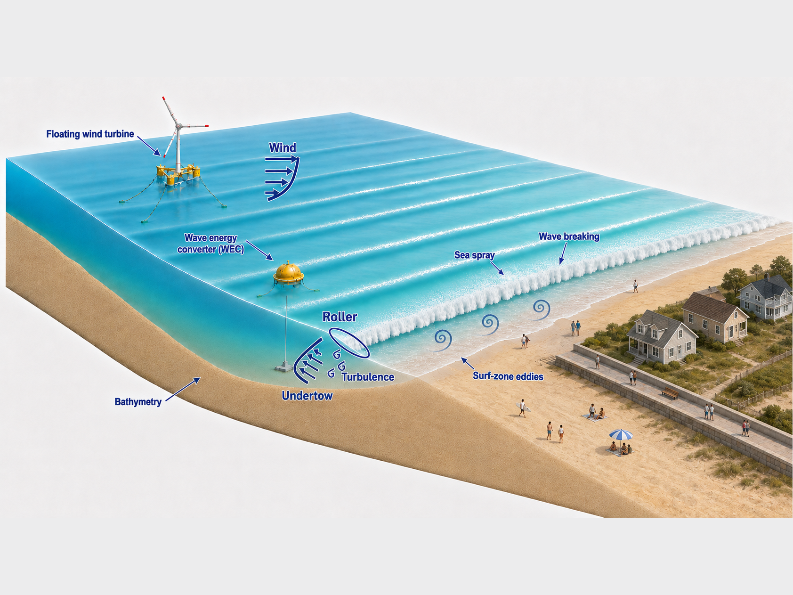
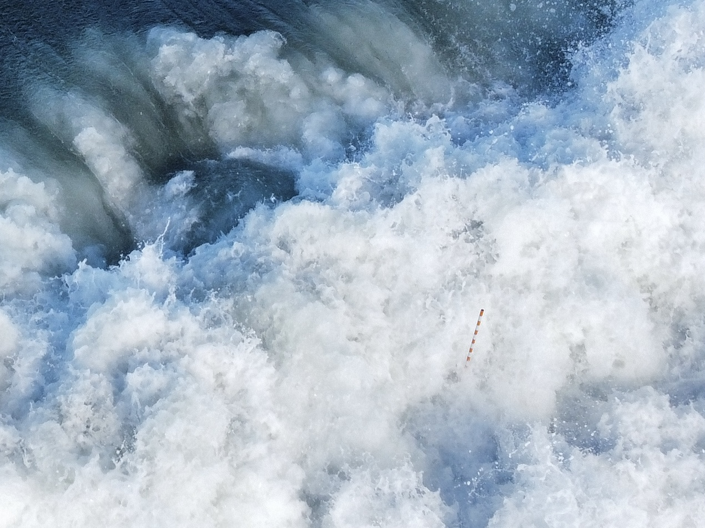
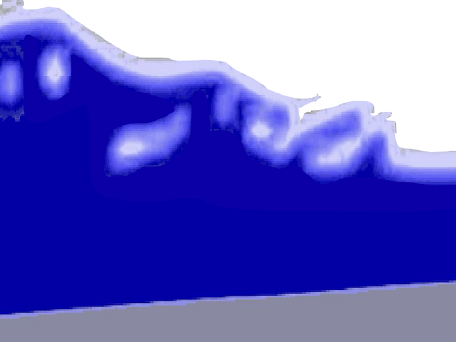
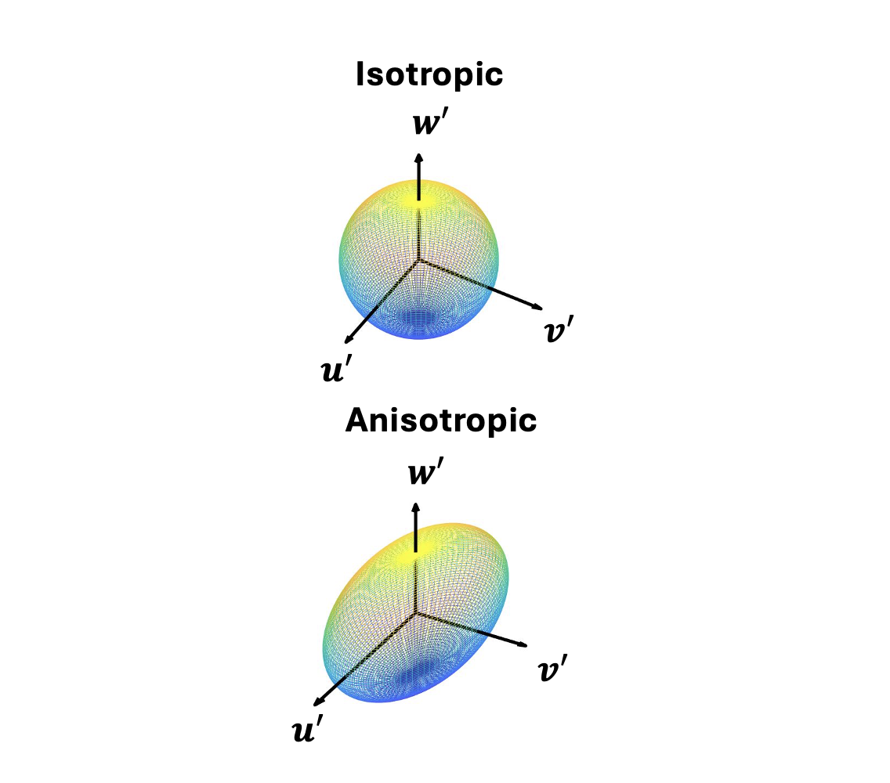
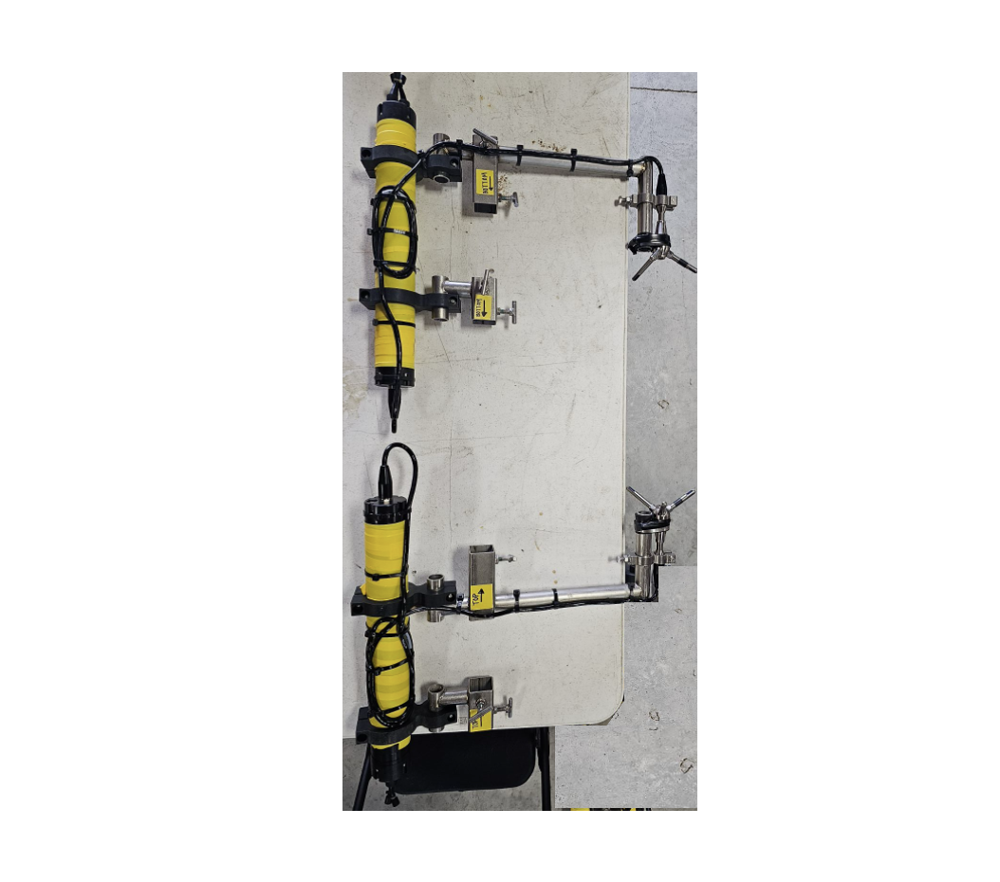

I earned my Ph.D. in Physical Oceanography through the MIT-WHOI Joint Program. Advised by Dr. Britt Raubenheimer and Dr. Steve Elgar, I studied nearshore hydrodynamics, including breaking-wave-driven rollers, turbulence, undertow, and eddies. My research combined numerical modeling using OpenFOAM and Dedalus with in situ observations.
I earned my bachelor's degree in physics from Cornell University, where I focused on theoretical fluid dynamics, numerical modeling, and applied mathematics.
I am deeply committed to teaching and outreach. I have completed the Cornell's Teaching and Learning Physics course and MIT Graduate Teaching Development Track to deepen my understanding of teaching theory and practice. I have also designed and taught math and nearshore dynamics courses at WHOI and Princeton. In support of outreach, I am a member of the Society of Physics Students and have organized physics demonstrations and given oceanography seminars at middle schools.
Research
Although coastal waters and surfzones cover only about 7% of the ocean, they form the critical boundary between the ocean and human society. In the United States, shore-adjacent counties are home to approximately 30% of the population and generate about 35% of the nation’s GDP.
These environments are shaped by complex, multiphase and multiscale processes, including wave breaking, sediment and biota transport, and misaligned wind–wave interactions.
Understanding these processes is essential for assessing coastal hazards, beach erosion, and pollutant dispersal, as well as for advancing marine renewable energy.

I am broadly interested in understanding multiphase physical processes in coastal and nearshore environments and their implications for coastal community safety and well-being, as well as for marine renewable energy. My research combines high-fidelity modeling, field observations, laboratory experiments, and theoretical analysis.
When waves break, the wave roller, an aerated region on the front face of a spilling wave, redistributes momentum into mean cross- and alongshore currents and wave setup (breaking wave induced mean water level increase), causing these responses to lag behind wave-energy dissipation. Because rollers are transient and highly unsteady, their properties are difficult to measure directly in laboratory or field settings, and existing parameterizations of roller shape and energy are largely empirical.
My research then used the two-phase (air & water) Reynolds-averaged Navier–Stokes (RANS) model waves2Foam, together with in situ pressure and current measurements, to directly quantify the cross-shore evolution of wave rollers over barred and unbarred beaches under different offshore wave conditions and to evaluate existing parameterizations.

A breaking wave roller crossing a mounted sensor (marked by colored fiberglass pole) observed near Duck, NC during our field observation in 2021 using a drone.

A snapshot of a cross-shore vertical view of a breaking wave roller simulated in our two-phase model in OpenFOAM where blue indicates water.
Turbulence is ubiquitous in the ocean, and it is especially strong in surfzone due to breaking waves. Breaking-wave turbulence is responsible for mixing in the water column, transporting momentum cross-shore and downward, and dissipating wave energy. Accurately estimating turbulence strength and structure in surfzone is critical for estimating vertical structure of undertow and cross-shore wave transformation. Yet, two-equation RANS model relates turbulence structure with mean current stress, assuming maximum turbulence energy flux across length scales, leading to erroneous turbulent estimate in the model and subsequently unsatisfactory estimation of undertow.
For my research, I use in-situ field observation to directly estimate surfzone turbulence anisotropy (directional preference of turbulence Reynolds stresses) and relate that to bulk wave and mean current.

Schematic plots of turbulence fluctuation ellipsoid for isotropic (top) and anisotropic (bottom) states.

An assembly of two vertically stacked Acoustic Doppler Velocimeters (ADVs) for measuring surfzone turbulence during our field observation in 2023.
Related publicationChen, J., Raubenheimer, B., & Elgar, S. (2025). Anisotropy of surfzone turbulence. Journal of Physical Oceanography, 55(9), 1435-1450.
03
Vertical structure of undertow
In the surf zone, undertow, an offshore-directed mean current below the wave trough, balances the onshore mass transport carried by breaking waves and rollers. Understanding the vertical structure of undertow is critical to accurately estimate the water column mixing, bottom shear stress and sediment transport rate, which has important implications for beach erosion and the transport of land-based pollutants and biota. However, the depth-dependent momentum forcing that controls undertow remains poorly understood.
My research uses the aforementioned two-phase RANS model to quantify the vertical structure of undertow and its forcing terms and to develop parameterizations based on bulk wave and bathymetric properties.
Related publicationChen, J., Raubenheimer, B., & Elgar, S. Depth-resolved Surfzone Wave and Roller Transformation. In revision
04
Cross-shore eddy advection
Surfzone eddies can transport sediment and biota offshore across the surfzone. One proposed generation mechanism is short-crested wave breaking, caused by directional wave spreading or alongshore-varying bathymetry. Uneven breaking produces strong forcing beneath each crest and weaker forcing between crest ends, generating vortex dipoles at the crest tips. These vortices may merge through an inverse cascade into larger eddies, with scales of approximately 10–100 m, that can propagate toward the inner shelf. However, the processes governing their cross-shore transport remain poorly quantified.
My research uses a simplified process model implemented in Dedalus to derive dimensionless relationships describing eddy advection over a slope as a function of slope and wave properties.
05
Misaligned wind–wave interaction
Winds and ocean surface waves often travel in different directions, particularly during storms with rapidly changing winds and in coastal regions where bathymetry influences wave propagation. Understanding these misaligned interactions is essential for predicting wind profiles, improving wave-forecasting models, and optimizing offshore wind-turbine performance.
My research employs two-phase direct numerical simulations (DNS) to resolve misaligned wind–wave interactions and develop physical frameworks and parameterizations applicable across a range of wind and wave conditions.
Publications
Peer-reviewed Journal Articles
Chen, J., Raubenheimer, B., & Elgar, S. (2025). Anisotropy of surfzone turbulence. Journal of Physical Oceanography, 55(9), 1435-1450.
Chen, J., Raubenheimer, B., & Elgar, S. Depth-resolved Surfzone Wave and Roller Transformation. Journal of Geophysical Research: Oceans
Invited Seminars
A Peek into Misaligned Oceanic Wind–Wave Interactions with High-Fidelity Models, New Light: Rising Stars in Energy and the Environment, Princeton University, Jun. 2026.
Cross-shore Transformation of Breaking Random Waves in the Surfzone, Shanghai Jiao Tong University, Apr. 2025.
Cross-Surfzone Transport Dynamics by Random Breaking Waves, Sack Lunch Seminar, MIT, Dec. 2024.
Cross-Surfzone Transport Dynamics by Random Breaking Waves, Center for Coastal Studies Seminar, Scripps Institution of Oceanography, Oct. 2024.
Simulations and Observations of Surfzone Waves and Undertow, Coastal Ocean Fluid Dynamics Laboratory (COFDL) Seminar, WHOI, Aug. 2021.
Conferences
Chen, J., Scapin, N., & Deike, L. A DNS Study of Momentum and Energy Exchange in Misaligned Wind-Wave Conditions, 2026 International Ocean Vector Winds Science Team Meeting,
Chen, J., Scapin, N., Wu, J., & Deike, L. Momentum and Energy Exchange in Misaligned Wind-Wave Conditions, 2025 Annual Meeting of the APS Division of Fluid Dynamics.
Chen, J., Raubenheimer, B., Elgar, S., & Tsai, B. Simulations of Depth Resolved Cross-shore Momentum Transfer in the Surfzone, 2024 AGU Fall Meeting
Chen, J., Trowbridge, J., Raubenheimer, B., & Elgar, S. Observations of Surfzone Turbulence Anisotropy, 2024 Ocean Sciences Meeting
Chen, J., Raubenheimer, B., & Elgar, S. Tidal Effects of Cross-Shore Roller Transformation Over Barred Bathymetries, 2023 Young Coastal Scientists and Engineers Conference-Americas
Chen, J., Raubenheimer, B., & Elgar, S. Cross-shore Roller Transformation over Barred Bathymetries, 2022 AGU Fall Meeting
Chen, J., Raubenheimer, B., & Elgar, S. Surfzone Setup and Alongshore Currents During Hurricane Matthew, 2018 Annual Meeting of the APS Division of Fluid Dynamics